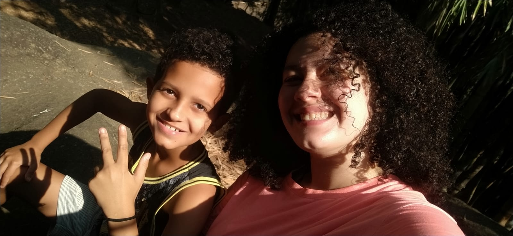
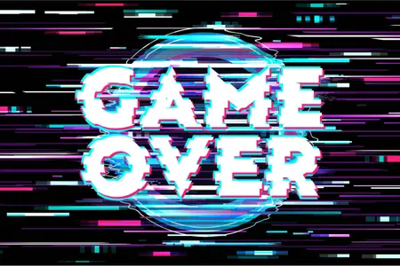

Qual minha comida preferida?
Qual minha cor favorita?

Quem é melhor?
meu tema favorito
profissão número um
melhor combinação
Qual numero da minha camisa do basquete?
Qual a data do meu aniversario?
Quantos anos eu tenho?
Qual é o nome do meu loirinho de olhos vermelhos?
Parabens por concluir!!!
pontuação:
10 erros - não me conhece
8 erros - ta precisando passar mais tempo comigo
5 erros - ta na media
2 erros - foi por pouco
0 erros - Meus parabens, voce me conhece perfeitamente!